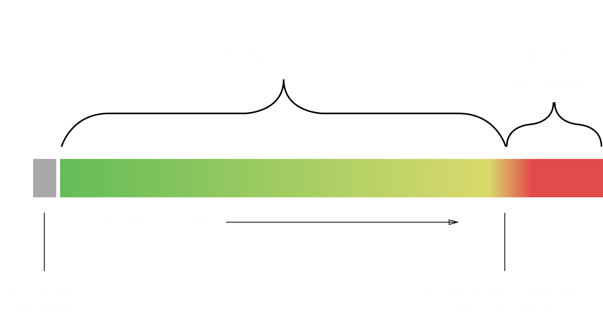

6 Tips for
Meaningful
Animation
By Mark Geyer
pres controls
nav to any slide, and hit return.
preface
This pres is for everyone!
No code required ;)
Hopefully this will help you to know
where and when to apply motion.
tip #1
state
state
Any interface element that's interactive
should have a least two states.
Showing state is a must!
It's feedback to the user to show that your
thing is responding to their actions.
Newton's third law of motion
For every action, there is an
equal and opposite reaction.
A lot of interface elements are boolean (true or false):
Buttons
Checkboxes
Radios
Text inputs
Alerts
Modals
Overlays
Etc.
Motion can bridge the starting
and ending points of these elements.
At a higher tier, state can also refer to
where a user is at within a particular flow.
E.g. creating an account, onboarding, navigation,
creation of something using a wizard, etc.
tip #2
scale
scale
When you make products,
motion should have a consistent flow.
With motion, what can scale?
- Time (Duration and delay)
- Specific movements (cubic-bezier's)
- Transforms (translate, scale, rotate, skew, etc.)
The sooner scales are in place the more you'll use them, which will define your motion patterns.
Example of a time scale...
- .1s = delay (fast), dropdown menus,
- .2s = delay (normal), button states, link states...
- .4s = delay (slow), modals, alerts, overlay fades...
- .8s = etc.
Example of a bezier curve scale...
Linear
Follow through 1
Follow through 2
Follow through 3
Simple scales for each transform would help too!
Translate
Scale
Rotate
Origin
Opacity
tip #3
personality
personality
The voice, visuals, and motion of your product.
The amount of polish that should go into a product, should be very high.
But, first it needs to work... and this
is typically where teams get stuck.
Experiment with motion in the design process,
but only after you know what you're building!
Smooth (ease)
Follow through
Bouncy
Anticipation
tip #4
overboard
overboard
Going too far with it.
Say you have a button...
button
^ press it
It's easy to do when it comes to motion.
The more motion, the better... right? Nope.
Even if various transitions are amazing...
if there's too much of it going on with
EVERY interaction... it can cause nausea.
A little motion goes a long way
So remember... don't do this.
tip #5
emotion
emotion
The mental state of your user
while using your interface.
For example, when making a movie,
everything is planned.
Millions are spent on writing scripts,
planning storyboards, hiring actors, etc.
Characters of a story are meant to
shape your emotions towards them.
When building product,
everything is planned.
Millions are spent on research, road maps,
planning screens, development, wizard parties, etc.
With the element of interaction, we have
to provoke AND support user emotions.
Positives
Onboarding
Confirmations
A beautiful interface
Negatives
Stuff is broken
Super slow
Bad UX
Motion, along with great UX design,
can help support the feels!
tip #6
continuous
continuous
Don't stop evolving and educating your
team about your motion system.
When motion concepts go viral...
take note of it and incorporate what works,
evolving your motion system.
With animation libraries, everything you come
across might work for your product as is.
To be unique, it's best if you
create a motion system yourself :)
Take a step back!
Sometimes, in order to know what to do next...
you need to get away from it first.
Looking at designs you made the previous day
makes you see things that you didn't see before.
Almost done...
Leonardo da Vinci
The outline for this talk was based around his process of creating a painting.
Plus! He looks like a wizard, ha!